전자산업기사 (2005-09-04 기출문제)
1과목: 전자회로
1. 이미터 접지 증폭회로에서 IB를 20[uA]에서 300[uA]로 변화 시켰더니 IC는 2.5[mA]에서 5[mA]로 변했다면 이 증폭기의 전류 증폭율은 얼마인가?(오류 신고가 접수된 문제입니다. 반드시 정답과 해설을 확인하시기 바랍니다.)
- 10
- 25
- 35
- 50
(정답률: 32%)

2. 시미트 트리거(schmitt trigger) 발생 회로는?
- 클램프 회로
- 계단파 발생회로
- 톱니파 발생회로
- 구형파 발생회로
(정답률: 74%)
3. 접합형 트랜지스터의 구조를 옳게 설명한 것은?
- 베이스 폭은 좁게 하고. 불순물을 적게 넣는다.
- 베이스, 이미터 및 컬렉터의 폭을 비슷하게 한다.
- 베이스 폭은 비교적 넓게하고, 불순물을 적게 넣는다.
- 베이스, 이미터 및 컬렉터에 비슷한 정도의 불순물을 첨가한다.
(정답률: 74%)
4. 다음 회로는 컬렉터 동조 발진기이다. 발진 주파수를 fo, 동조 주파수를 fr 이라 할 때 fo와 fr이 어떠한 관계에 있을 때 발진하는가? (단, 입력측은 유도성이라 한다.)
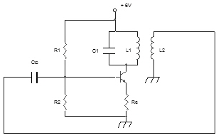
- fo = fr
- fo ＞ fr
- fo ＜ fr
- 아무런 관계도 없다.
(정답률: 58%)
5. 공통 컬렉터 증폭기(CC)의 특성 중 옳지 않은 것은?
- 이미터 폴로어(Emitter Follower)라고도 부른다.
- 전압 이득이 매우 크다.
- 버퍼로 많이 사용된다.
- 입력 저항이 크다.
(정답률: 57%)
6. RC 결합 증폭회로에서 증폭 대역폭을 4배로 하려면 증폭 이득을 몇 [dB]감소시켜야 하는가?
- 0.5 [dB]
- 4 [dB]
- 6 [dB]
- 12 [dB]
(정답률: 61%)
7. 정전압 전원장치에서 무부하 때 직류 출력 전압이 150[V], 전 부하 때의 출력전압이 125[V] 이었다. 전압 변동률은?
- 13[%]
- 15[%]
- 20[%]
- 25[%]
(정답률: 82%)
8. 그림과 같은 궤환 증폭기의 특성에 관한 설명 중 옳지 않는것은?
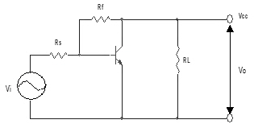
- 궤환으로 입력 임피던스가 감소한다.
- 궤환으로 출력 임피던스가 감소한다.
- 궤환으로 전류이득이 감소한다.
- RF가 작을수록 출력 전압은 커진다.
(정답률: 44%)
9. 전력증폭기의 직류공급 전력은 12[V], 400[mA]이고 능률은 60% 일 때, 부하에서의 출력 전력은?
- 0.6[W]
- 1.44[W]
- 2.88[W]
- 4.8[W]
(정답률: 65%)
10. 진폭 변조(AM)에서 반송파 진폭이 20 [V] 이다. 25 [V]의 진폭을 가지는 신호파를 인가한 경우 변조도는?
- 0.65
- 0.8
- 1.0
- 1.25
(정답률: 66%)
11. 그림과 같은 회로에서 RL에 2 [mA] 전류를 흘려주려고 한다. RL 값은?
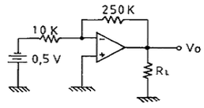
- 4 [KΩ]
- 5.25 [KΩ]
- 6.25 [KΩ]
- 7.25 [KΩ]
(정답률: 80%)
12. 연산증폭기의 응용 회로에 속하지 않는 것은?
- 배율기(multiplier)
- 가산기(adder)
- 변환기(converter)
- 적분기(integrator)
(정답률: 68%)
13. 다음 회로에 대한 설명으로 옳지 않은 것은?
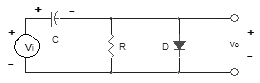
- 리미터 회로
- 직류재생 회로
- 입력신호의 기준 레벨을 변화시키는 회로
- 클램프 회로
(정답률: 59%)
14. 도면과 같은 회로에서 출력 전압 Vo는?
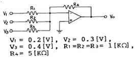
- 3.6V
- -3.6V
- 4.5V
- -4.5V
(정답률: 72%)
15. 다음 회로의 출력 전압(Vo)은?
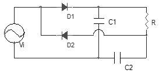
- Vo = Vi
- Vo = 2Vi
- Vo = Vim
- Vo = 2Vim
(정답률: 42%)
16. 일반 트랜지스터에 비하여 FET의 장점이 아닌 것은?
- 잡음이 적다.
- 입력 저항이 크다.
- 온도 변화에 안정하다.
- 이득-대역폭의 곱(gain-bandwidth product)이 크다.
(정답률: 79%)
17. 다음 중 C급 증폭기의 효율은?
- A급 보다 낮다.
- B급 보다 낮다.
- AB급 보다 낮다.
- A급, B급, AB급 보다 높다.
(정답률: 81%)
18. 부궤환 증폭회로의 특징으로 옳지 않은 것은?
- 이득이 증가한다.
- 잡음이 감소한다.
- 대역폭이 넓어진다.
- 주파수 특성이 좋아진다.
(정답률: 76%)
19. 다음 발진기들 중 궤환 회로를 사용하지 않는 발진기는?
- LC 동조회로를 사용한 터널 다이오드 발진기
- 컬렉터 동조 발진기
- CR 이상 발진기
- X-tal 발진기
(정답률: 64%)
20. 이상적인 궤환 증폭기의 기본적 특성을 설명한 것 중 옳지 않은 것은?
- 기본 증폭기는 단방향적이어야 한다.
- 궤환 회로도 단방향적이어야 한다.
- 기본 증폭기에 대한 궤환 회로의 부하 작용은 무시 되어야 한다.
- 기본 증폭기의 동작은 궤환 회로가 있을 때 이득이 커져야 한다.
(정답률: 40%)
2과목: 전기자기학 및 회로이론
21. 패러데이(Faraday)관의 성질로 틀린것은?
- 패러데이관내의 전속수는 일정하다.
- 패러데이관의 양단에는 양, 음의 단위전하가 있다.
- 진전하가 있는 곳에서는 패러데이관은 연속이다.
- 패러데이관의 밀도는 전속밀도와 같다.
(정답률: 61%)
22. 비투자율 4000 인 철심을 자화하여 자속밀도가 0.1 Wb/m2으로 되었을 때 철심의 단위 체적에 저축된 에너지는 약 몇 J /m3 인가?
- 1
- 2
- 3
- 4
(정답률: 22%)
23. 정전용량의 역수를 나타내는 것은?
- 컨덕턴스
- 퍼미언스
- 엘라스턴스
- 커패시턴스
(정답률: 35%)
24. 전자석에 사용하는 연철(soft iron)의 성질로 옳은 것은?
- 잔류자기, 보자력이 모두 크다.
- 보자력이 크고, 잔류자기가 작다.
- 보자력이 크고, 히스테리시스 곡선의 면적이 작다.
- 보자력과 히스테리시스 곡선의 면적이 모두 작다.
(정답률: 47%)
25. 전기력선의 성질 중 틀린 것은?
- 진공 중에서 전기력선은 단위전하에서 1/ε0개가 출입한다.
- 전기력선은 도체 내부에서 연속적이다.
- 전기력선 밀도는 전계의 세기와 같다.
- 전기력선은 등전위면에 수직이다.
(정답률: 49%)
26. 권수 600, 자기인덕턴스 1mH 의 코일에 3A 의 전류가 흐를때 이 코일면을 지나는 자속은 몇 Wb 인가?
- 2 × 10-6
- 3 × 10-6
- 5 × 10-6
- 9 × 10-6
(정답률: 38%)
27. 간격 d[m]인 두 개의 평행판 전극사이에 유전률 ℇ의 유전체가 있을 때 전극 사이에 전압 v = Vm sin ⍵t 를 가하면 변위전류밀도는 몇 A/m2 인가?
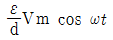
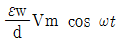
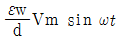
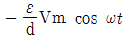
(정답률: 34%)
28. 같은 양, 같은 부호의 전하가 어느 거리만큼 떨어져 있을 때, 전하사이의 중점에 있어서의 전계의 세기는?
- 0 이다.
- ∞ 이다.
- 9×109이 된다.
- 1/9×109이 된다.
(정답률: 71%)
29. 질량 m[Kg]인 작은 물체가 전하 Q[C]을 가지고 중력 방향과 직각인 무한도체평면 아래쪽 d[m]의 거리에 놓여있다. 정전력이 중력과 같게 되는데 필요한 Q[C]의 크기는?
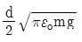
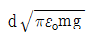
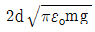
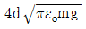
(정답률: 58%)
30. 공간 도체 중의 정상 전류밀도가 i, 전하밀도가 e일 때 키르히호프의 전류법칙과 같은 것은?
- i=0
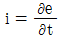
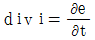
- div i=0
(정답률: 59%)
31. 다음과 같은 회로의 용량 리액턴스 Xc[Ω]는?
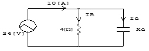
- 3
- 6
- 8
- 12
(정답률: 18%)
32. R, L, C 직력회로에서 공진 주파수 fo는?
- LC의 제곱근에 반비례하여 감소
- C에 비례하여 증가
- L에 비례하여 증가
- 변화없다.
(정답률: 80%)
33. 자기 인던턴스 L1, L2 가 각가가 4[mH], 9[mH]인 두 코일이 이상결합(理想結合)되었다면 상호 인덕턴스 M은 몇 [mH]가 되는가?
- 6
- 6.5
- 9
- 36
(정답률: 85%)
34. R-C 직렬 회로에서 시정수 T[sec]는?
- RC
- 1/RC
- √RC
- 1/√RC
(정답률: 85%)
35. 그림과 같은 회로에서 R 의 값은?
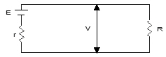
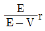
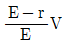
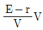
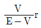
(정답률: 56%)
36. Ae-at의 라플라스 변환은?
- A/S-α
- A(S+⍺)
- A/S+α
- (S-⍺)/A
(정답률: 65%)
37. 일정한 정현파 전류가 일정한 용량을 같는 인덕터의 양단에 인가되고 있다. 만약, 인덕터의 인덕턴스가 증가되었을 경우 이 때의 유도전압은?
- 감소한다.
- 변화가 없다.
- 증가한다.
- 차단된다.
(정답률: 50%)
38. 4단자 파라미터 ABCD 중에서 단락 역방향 전류 이득을 나타내는 파라미터는?
- A
- B
- C
- D
(정답률: 82%)
39. 그림과 같은 회로가 정저항 회로가 되기위한 C 값은 몇 [μF] 인가? (단, R=2[KΩ], L=400 [mH]이다.)
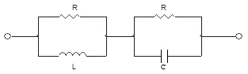
- 0.1
- 0.2
- 1
- 2
(정답률: 35%)
40. 어떤 4단자망의 입력 단자 1, 1‘ 사이의 영상 임피던스 Z01과 출력 단자 2, 2’ 사이의 영상 임피던스 Z02 가 같게 되려면 4단자 정수사이에 어떠한 관계가 있어야 하는가?
- A=D
- B=C
- AB=CD
- AD=BC
(정답률: 61%)
3과목: 전자계산기일반
41. 다음 중 자기 보수성(self complement) 코드가 아닌 것은?
- Gray code
- 2421 code
- 51111 code
- Excess-3 code
(정답률: 34%)
42. 다음 그림은 어떤 컴퓨터 구조에 해당 하는가? (단, CU:control unit, PU:process unit, IS:instruction stream, DS:data stream, MM:memory module)
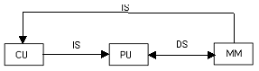
- SISD 구조
- SIMD 구조
- MISD 구조
- MIMD 구조
(정답률: 78%)
43. 마이크로프로세서 구성 요소들을 기능별로 분류한 것 중 옳지 않은 것은?
- 마이크로프로세서 칩은 중앙처리장치와 동등한 역할을 한다.
- ROM, RAM 반드시 별도의 칩으로 구성해야 한다.
- ROM, RAM 칩은 필요에 따라 적절한 기억장소의 크기를 선택할 수 있다.
- 인터페이스는 CPU와 많은 종류의 입ㆍ 출력 장치들과의 접속을 수행한다.
(정답률: 87%)
44. 번지 레지스터와 번지 버스가 12 비트인 경우 최대로 지적할 수 있는 기억 장치의 용량은?
- 4킬로
- 8킬로
- 12킬로
- 12메가
(정답률: 59%)
45. 어떤 명령(instruction)이 수행되기 위해 가장 우선적으로 이루어져야 하는 마이크로 오퍼레이션은?
- PC→MBR
- PC+1→PC
- MBR→IR
- PC→MAR
(정답률: 90%)
46. CPU에서 micro- Operation이 순서적으로 진행되도록 하는데 필요한 것은?
- 프로그램 카운터
- 프로그램 상태어(PSW)
- 제어 신호(control signal)
- 어큐뮬레이터(accumulator)
(정답률: 57%)
47. computer를 사용해서 업무를 처리할 때 수작업에 비해 갖게 되는 이점으로 가장 옳지 않은 것은?
- 정확성
- 신속성
- 융통성
- 신뢰성
(정답률: 74%)
48. 명령어를 구성하는 2부분은?
- 명령코드와 레지스터
- 동작코드와 기억장치
- 동작코드와 데이터주소
- 명령형식과 동작
(정답률: 33%)
49. 명령(instruction)의 형식에 있어서 연산수(주소의 개수)에 의한 분류시 해당되지 않는 것은?
- 1 주소 방식
- 2 주소 방식
- 3 주소 방식
- 4 주소 방식
(정답률: 80%)
50. 고정 소수점에서 음수를 표현하는 방식이 아닌 것은?
- 부호와 절대값(Signed Magnitude)
- 1의 보수(1‘s Complement)
- 2의 보수(2‘s Complement)
- 9의 보수(9‘s Complement)
(정답률: 64%)
51. 어떤 컴퓨터의 기억장치 용량이 4096 워드이다. 각 워드가 16비트라고 하면 MAR과 MBR의 각 비트수는?
- MAR: 12, MBR: 5
- MAR: 12, MBR: 16
- MAR: 32, MBR: 24
- MAR:5, MBR: 12
(정답률: 79%)
52. 누산기나 레지스터에 있는 내용을 지정된 메모리 주소로 옮기는 명령은?
- Transfer 명령
- Load 명령
- Store 명령
- Fetch 명령
(정답률: 79%)
53. 주소가 아닌 내용에 의해서 호출되는 방식으로 기억된 정보의 일부분을 이용하여 그 정보가 기억된 위치를 알아낸 후 그 위치에서 나머지 정보에 접근할 수 있는 특수한 기억 장치를 무엇이라고 하는가?
- Cache memory
- Virtual memory
- Associative memory
- Memory interleaving
(정답률: 77%)
54. 컴퓨터에서 명령문이 시행될 때 다음에 시행할 명령문의 주소는 어디에 두는가?
- Program Counter
- MAR(Memory Address Register)
- Cache
- Instruction Register
(정답률: 84%)
55. 스택 구조에 관한 설명 중 옳지 않은 것은?
- CPU가 가지고 있는 활용도가 높은 기법이다.
- 지수를 세는 번지 레지스터를 가진 메모리이며, 이 레지스터에 다른 값들도 저장할 수 있다.
- 읽고 쓰는 것이 가능하다.
- 스택에서 꺼내는 동작을 Push라 한다.
(정답률: 75%)
56. 입ㆍ 출력을 수행하는 각 장치의 기능에 대한 설명 중 옳지 않은 것은?
- I/O 제어는 프로그램 메모리로부터 명령을 받아 인터페이스를 통하여 주변장치와 대화한다.
- 인터페이스 논리는 I/O 버스로부터 받은 명령을 해석하고 주변장치 제어기에 신호를 보낸다.
- 각 주변장치는 특정한 전기 기계적 장치를 동작시키고, 제어하는 자신의 제어기를 갖고 있다.
- I/O 버스는 데이터의 흐름을 동기화하고 주변장치와 컴퓨터 사이의 전달 속도를 관리한다.
(정답률: 71%)
57. 순서도를 사용할 때의 특징이 아닌 것은?
- 프로그램 코딩의 직접적인 자료가 된다.
- 프로그램의 정확성 여부를 판단하는 자료가 된다.
- 프로그램을 다른 사람에게 인수 인계하기가 어렵다.
- 프로그램의 내용과 일 처리 순서를 한눈에 파악할 수 있다.
(정답률: 94%)
58. 그레이코드 (01110)G 2진수로 변환하면?
- (11100)2
- (11101)2
- (01011)2
- (10001)2
(정답률: 79%)
59. 컴파일러는 고급언어를 다음 중 무엇으로 변역하는가?
- 기초언어
- 문제지향언어
- 대화식언어
- 기계어
(정답률: 85%)
60. 명령어가 해독되는 곳은?
- 주기억장치
- 연산장치
- 레지스터장치
- 제어장치
(정답률: 55%)
4과목: 전자계측
61. 표준신호발생기는 출력단을 개방 하였을 때 몇 [V]의 전압을 0[dB]로 한 전압 데시벨 눈금으로 표시 하는가?
- 1 [μV]
- 1 [V]
- 0.775 [V]
- 7.75 [V]
(정답률: 66%)
62. 유도형 계기의 특징이 아닌 것은?
- 직류 적산전력계로 사용한다.
- 회전력이 크며, 조정이 용이하다.
- 가동부를 전류 제동판으로 쓸 수 있다.
- 공간의 자계가 강하기 때문에 외부자계의 영향이 적다.
(정답률: 52%)
63. 음량계(VU) meter)에 관한 설명으로 옳지 않은 것은?
- 감시용이며, 시정수는 중요하지 않다.
- 눈금은 VU 눈금 이외에 [%] 눈금으로 표시한 것도 있다.
- 방송이나 녹음시 음성 레벨의 크기를 측정하기 위한 계기이다.
- 가변 저항 감쇠기와 연결하여 사용한다.
(정답률: 82%)
64. 다음과 같은 블록도를 갖는 측정은 무슨 특성을 측정하고자 하는 것인가?
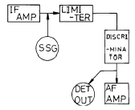
- 진폭 제한기의 특성 측정
- 주파수 변별기의 특성 측정
- 저주파 증폭기의 특성 측정
- 중간주파 증폭기의 특성 측정
(정답률: 81%)
65. 셰링브리지(Schering Bridge)는 어떤 측정에 사용되는가?
- 동손
- 유도 리액턴스
- 철심의 관전류
- 정전용량과 손실각
(정답률: 85%)
66. 그림과 같은 파형이 오실로스코프에 나타났을 때, 두 신호의 위상차는?(단, a=24[mm], b=12[mm])
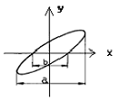
- 30°
- 40°
- 45°
- 60°
(정답률: 65%)
67. 최대눈금 250[V]인 0.5급 전압계로 전압을 측정하였더니 지시가 100[V]였다고 한다. 상대 오차는?
- 1[%]
- 1.25[%]
- 2[%]
- 2.25[%]
(정답률: 65%)
68. 고주파 전류계용으로 일반적으로 많이 사용되는 것은?
- 가동철편형
- 전류력계형
- 가동코일형
- 열전대형
(정답률: 59%)
69. 열전대형 전류계에서 발생되는 오차가 아닌 것은?
- 공진 오차
- 배분 오차
- 차폐 오차
- 표피 오차
(정답률: 53%)
70. 감도가 높고, 정밀 측정에 적합한 측정 방법은?
- 직편법
- 반경법
- 편위법
- 영위법
(정답률: 94%)
71. 피측정 주파수를 계수형 주파수계로 측정한 결과 1초에 반복한 횟수가 60번 이었다. 피측정 주파수는?
- 1 [Hz]
- 60 [Hz]
- 1/60 [Hz]
- 360[Hz]
(정답률: 87%)
72. 오실로스코프(Oscilloscope)로 파형 관측 시 톱니파를 피측정 전압에 동기시키는 이유는?
- 파형을 수직 이동시키기 위하여
- 파형을 확대시키기 위하여
- 휘도를 밝게 하기 위하여
- 파형을 정지시키기 위하여
(정답률: 92%)
73. 그림과 같은 회로에서 전력계 및 직류전압계는 각 각 100[W], 100[V]를 지시 하였다. 부하 전력은? (단, 전력계의 전류 코일 저항은 무시하며, 전압계의 저항은 1000[Ω] 이다.)
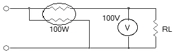
- 40[W]
- 60[W]
- 80[W]
- 90[W]
(정답률: 58%)
74. 다음 중 동작 원리의 설명으로 옳지 않은 것은?
- 가동코일형 - 자계와 전류사이에 작용하는 힘을 이용
- 전류력계형 - 두전류간에 작용하는 힘을 이용
- 가동철편형 - 자계내의 철편에 작용하는 힘을 이용
- 열전대형 계기 - 충전된 두물체 사이에 작용하는 힘을 이용
(정답률: 84%)
75. 파형을 보면서 주파수 펄스 전압을 측정하는데 가장 적당한 계기는?
- 전압계
- 전위차계
- 전류계
- 오실로스코프
(정답률: 84%)
76. 측정값을 M, 참값을 T 라고 할 때 백분율 오차는?
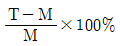
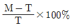
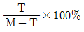
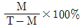
(정답률: 70%)
77. 다음 중 1[Ω] ~ 10 -5[Ω]의 아주 적은 저항을 측정할 때 사용하는 것은?
- 캘빈더블 브리지(Kelvin double bridge)
- 휘스톤브리지(Wheatstone bridge)
- 맥스웰브리지(Maxwell bridge)
- 윈 브리지(Wein bridge)
(정답률: 80%)
78. 전압계의 배율기 저항 Rm 은? (단, 배율은 M, 전압계 내부 저항은 Rv이다.)
- Rm=Rv(M+1)
- Rm=(M-1)Rv
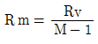
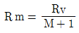
(정답률: 34%)
79. 가청 주파수 필터로 사용할 수 있는 것은?
- 대역소거필터
- 대역통과필터
- 고역필터
- 저역필터
(정답률: 66%)
80. 정전용량 Cv인 정전형 전압계에 용량 C인 콘덴서를 직렬로 연결하고 전압을 측정하여 V1의 지시를 읽었다. 입력 전압의 크기 V는?
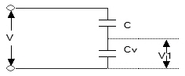
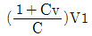
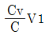
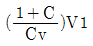
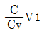
(정답률: 49%)
전류 증폭율 = IC/IB = (5[mA] - 2.5[mA]) / (300[uA] - 20[uA]) = 15[mA/uA] = 15,000
하지만, 이 문제는 오류가 있습니다. 전류 증폭율은 일반적으로 1000을 곱한 값으로 표기되기 때문에, 답은 15,000이 아니라 15입니다. 따라서, 가장 가까운 보기는 "10"이 아니라 "25"입니다.